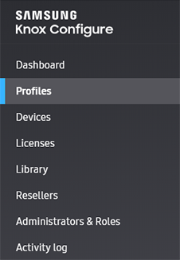
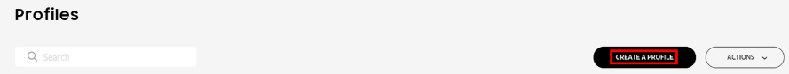
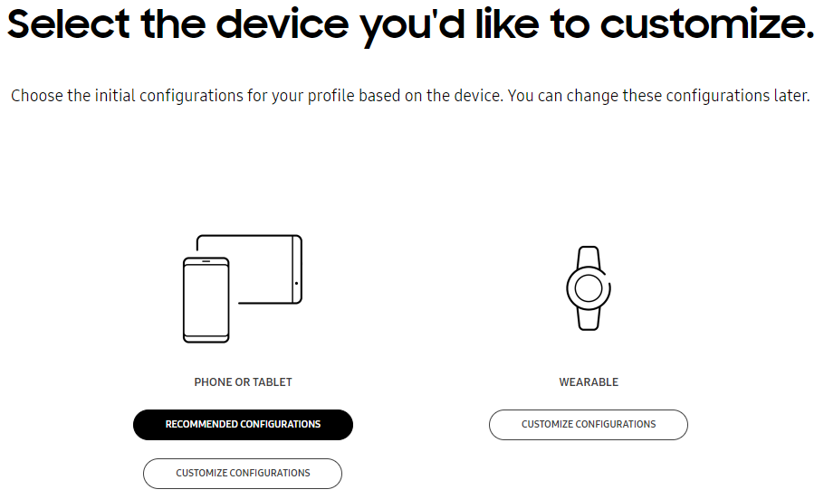
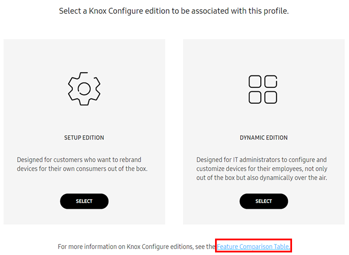
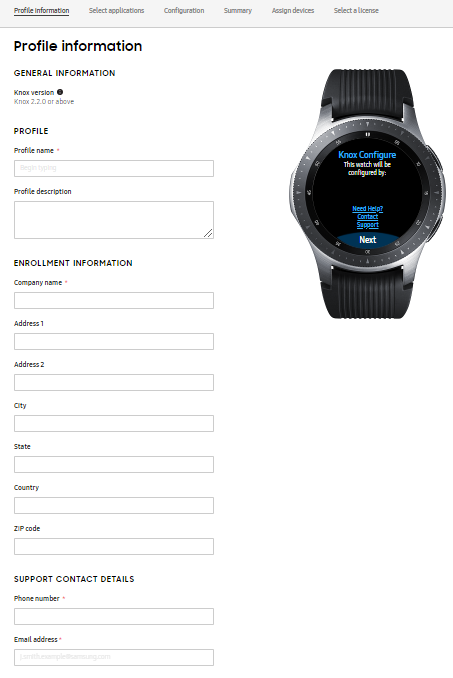
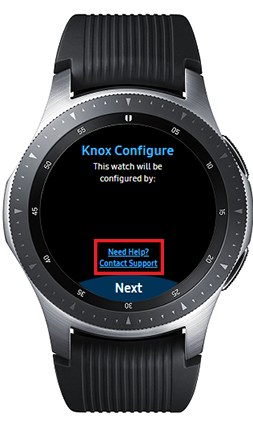
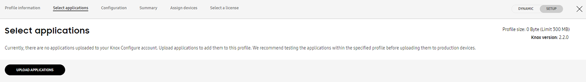

Create a profile
Last updated July 26th, 2023
This section guides you through how to create a new profile for wearable devices. Once you create a new profile, you can then customize your profile to apply custom settings to your wearable devices.
To create a profile:
-
Launch the Knox Configure Portal though the Samsung Knox dashboard.
-
Select Profiles from the left-hand navigation menu.

-
Click CREATE A PROFILE.

-
Select the device you’d like to customize: Click WEARABLE.
- Ensure you select the appropriate device type. PHONE OR TABLET utilize different applications and settings than WEARABLE devices.

-
Click Select under SETUP EDITION or DYNAMIC EDITION to specify the KC edition for the profile.
- For a full listing of features available for each edition, select the Feature Comparison Table link.

To date, if a device is configured and its assigned profile is changed, a profile push update is made regardless of the profile’s edition (Setup or Dynamic). New rules are now in place to restrict Setup edition profiles from receiving a push update. A Dynamic profile can still push update another Dynamic edition profile, and a Setup edition profile can still push update a Dynamic edition profile. However, a Setup edition profile can no longer update another Setup edition profile, nor can a Dynamic edition profile push update a Setup edition profile.
Profile information
This section describes inputting and retrieving basic wearable device profile information.

GENERAL INFORMATION — Includes information about the Knox version required for the profile.
- Knox version — The Knox version is hard coded to the profile. The version number can also be found by going to device settings: Settings > About device > Software info.
To use the latest profile features for Knox Configure, upgrade devices to the latest Knox version.
PROFILE — Enter profile name and description.
- Profile name — Enter a unique name not already used by an existing profile in your organization.
- Profile description — (optional) Provides an extended profile description to further distinguish this profile from others that may contain similar attributes.
ENROLLMENT INFORMATION — Enter details about your company. The company details will be viewable by the device user once enrolled.
- Company name — Enter your organization’s name.
- Address 1 — Enter your organization’s address.
- Address 2 — (Optional) Enter additional details about your organization’s address.
- City — Enter your organization’s city.
- State — Enter your organization’s State.
- Country — Enter your organization’s country.
- Zip Code — Enter your organization’s zip code or postal code.
SUPPORT CONTACT DETAILS — Enter your organization’s support phone number and email.
The device user will see the following information after tapping the Contact Support link on the watchface UI:

- Phone — Enter the phone number for support.
- Email address — Enter the email address for support.
DEVICE ENROLLMENT — You can add your own terms and conditions, policies with respect to the device user’s use of the device.
- Agreements — (Optional) Select Add additional Terms & Conditions and/or Privacy Policy to enter a custom organizational policy the device user must review and agree to in order to use the wearable device.
- Enrollment Preferences — (Optional) Select Allow end users to cancel enrollment to enable device users to decline device enrollment. If you don’t select this option, devices are automatically enrolled to Knox Configure after the device profile has been approved.
Ensure you review the EULA before submitting your profile. Once you have submitted your profile, the EULA can’t be revised, even when deploying profile updates.
KNOX DEPLOYMENT APPLICATION SETTINGS — Assign a license for the Knox Deployment App (KDA) at profile creation if enrolling a device via Bluetooth using the KDA.
- License — Used to assign devices uploaded by Bluetooth using KDA. Note that if a license is not selected, this profile will not appear as an option in the Knox Deployment App.
Only one license can be designated for KDA. An expired or consumed license may require an admin to assign a valid license to the profile.
PROFILE INFORMATION SCREEN — Customize the product information screen in the Knox Configure client.
- Product Name — Enter the product name displayed in the product information screen. If left blank, the name of the profile is used by default.
- Image — Upload a custom image to display in the product information screen. If you don’t add an image, the default generic image is shown. The image size can be PNG or JPG format and can’t exceed 2 MB in size.
- Access points — Optionally, configure an additional way for the device user to open the Knox Configure client.
- Add a non-dismissible notification — Select this option to add a persistent notification that the device user can tap to quickly access the Knox Configure client.
- Application name — Enter the application name shown in the notification.
- Notification message — Enter the message shown in the notification.
The Knox Configure portal does not support these special characters: # / $ * % ^ & \ ( ) + ? { } [ ]. Ensure they are not utilized when inputting characters to create a device profile.
Select applications
The Select Applications tab allows you to upload select relevant Tizen based wearable device apps or custom watch face apps to utilize with your device profile. Additionally, you can also add apps that can be invoked after a hardware key is remapped.

For additional instructions of how to upload and add apps, read about the App management feature.
Tutorial Progress
You’ve completed 2/4 steps! Go to the next step and customize your Knox Configure profile for:
- Setup edition
- Dynamic edition:
On this page
Is this page helpful?